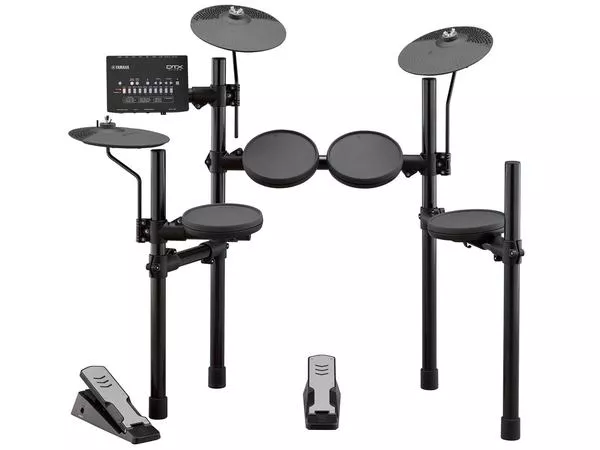
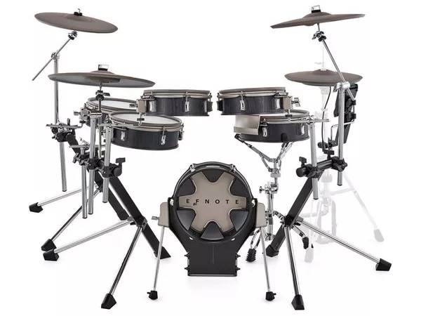
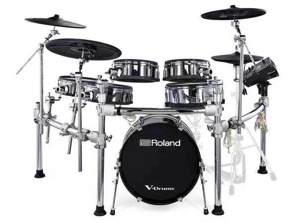

Questa batteria elettronica adatta
per principianti ha un costo accessibile
e oltre 32 modalità di suono regolabili dal
display integrato
inoltre è possibile regolare
il suono in uscita tramite le cuffie o via stereo.
PREZZO :349€
MARCA : YAMAHA
MODELLO: DTX402K


Questa batteria elettronica adatta
adatta per chi non vuole disturbare i vicini
ha oltre 32 modalità di suono regolabili dal
display integrato
inoltre è possibile regolare
il suono in uscita tramite le cuffie o via stereo.
il suono che sentirete sarà praticamente uguale alla realtà
PREZZO :2139€
MARCA : EFNOTE
MODELLO:3X

Questa batteria elettronica perfetta
per professionisti, è la migliore della gamma Roland
ha il metronomo integrato insieme
al dispositivo di interfaccia di suoni
modalità di suono regolabili dal display
integrato
inoltre è possibile regolare
il suono in uscita tramite le cuffie o via stereo.
PREZZO :6.780€
MARCA : ROLAND
MODELLO: TD-50KV2